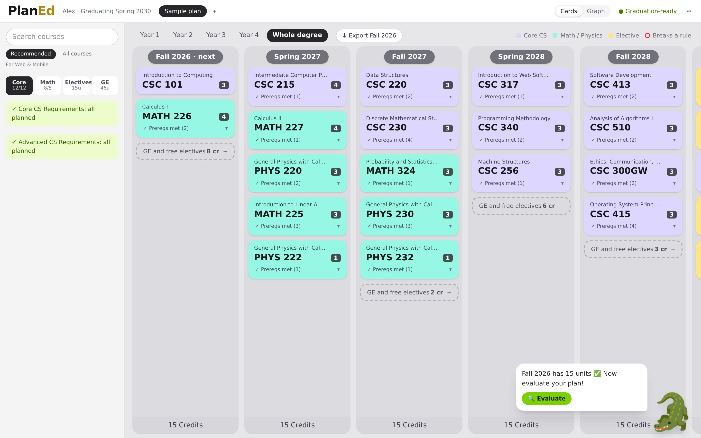
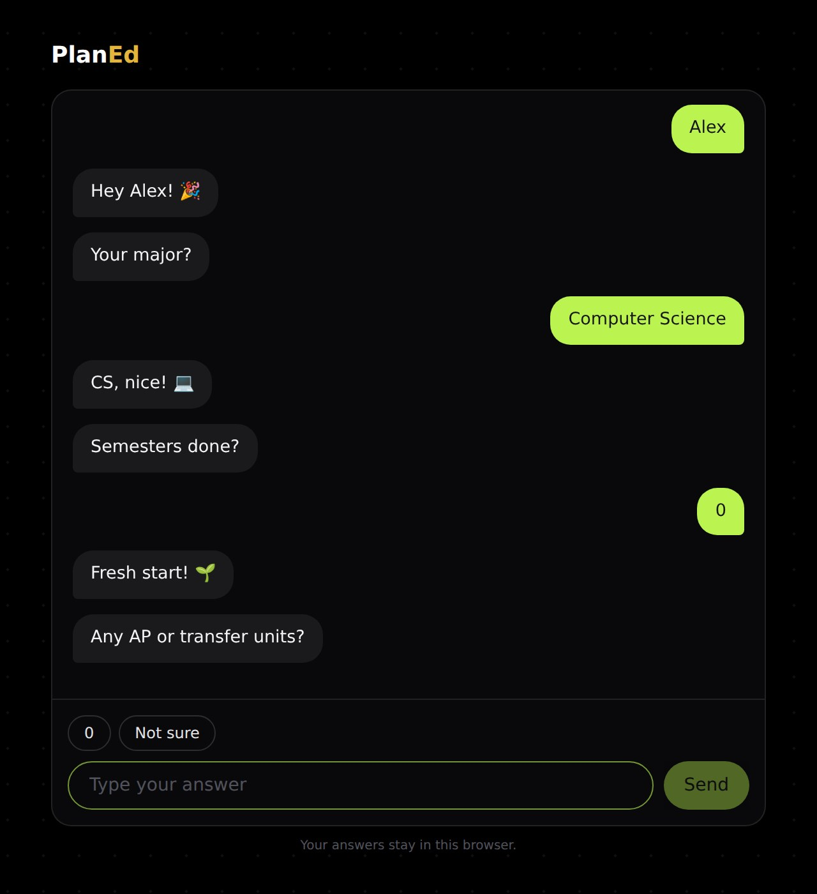
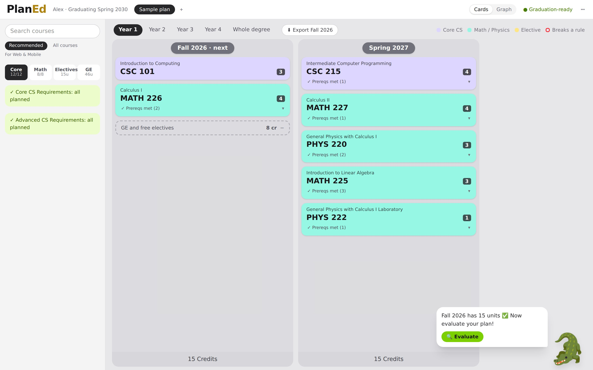
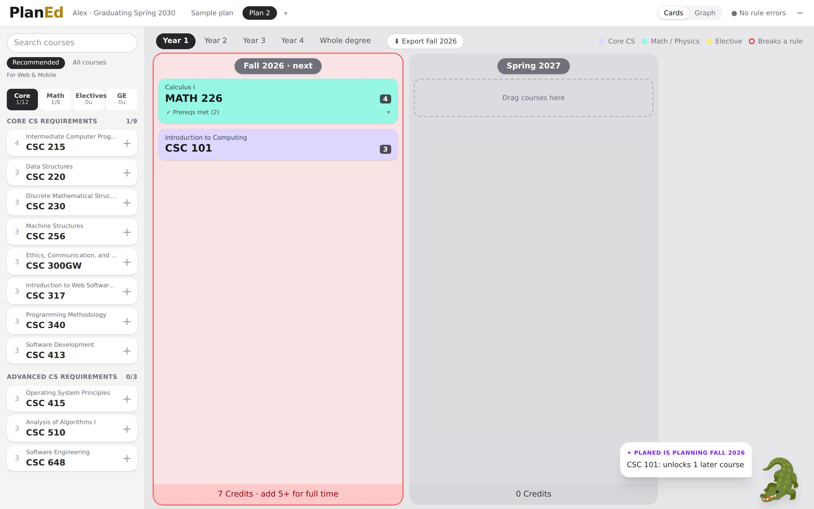
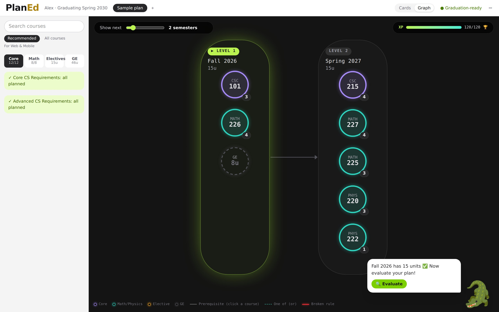
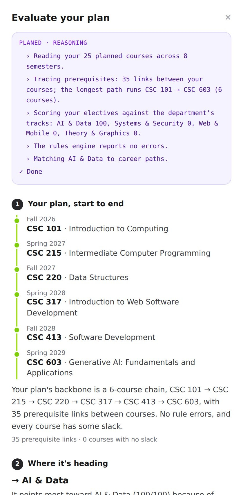
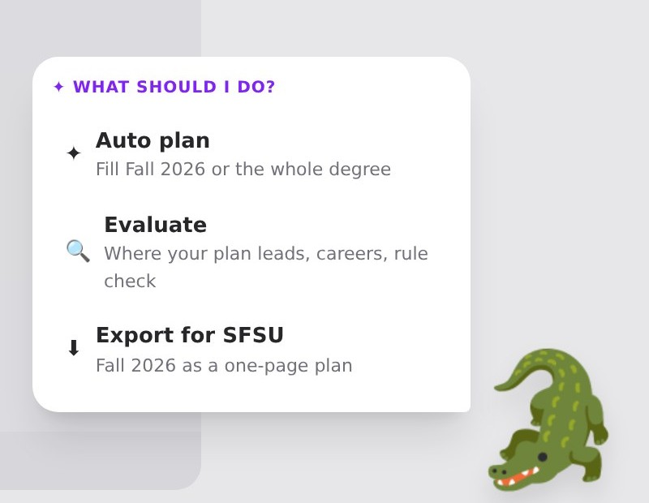

Course list with progress
Core, Math, Electives and GE tabs show what's left, with picks for your goal. The GE tab lists real SFSU GE courses by area.
PlanEd turns the SF State Bulletin into a semester-by-semester plan. Chat for a minute, let Auto Plan fill your semesters, and a rules engine checks every prerequisite and unit limit before you send it to SFSU.
Free and open source. Your answers stay in your browser.

Built on the public SF State Bulletin 2026–27
Why PlanEd
Today, SF State students plan in the Student Center, which runs on the CSU's Oracle PeopleSoft system.1 It splits the job in two: a Degree Progress Report that audits what's done, and a Degree Planner that lists courses by term. Neither shows how courses connect.
To be fair: the Student Center already suggests courses per term, supports locks and What-If reports, and knows your transfer and AP credit. PlanEd doesn't replace your official record. It makes the plan readable, and your advisor still signs off.
Product
A short chat, color-coded semester cards, and a graph of how every course connects.
PlanEd asks one question at a time: your name, major, semesters done, the courses you've taken, when you want to graduate, and your dream job. Then it plans for you, or lets you plan it yourself.

Core CS is lavender, math and physics are mint, electives are yellow. A card that breaks a rule turns red and tells you where to go, with a one-click move.

Ask the gator to Auto plan your next semester. Cards pop in one by one, and each comes with a reason: "MATH 226: unlocks 5 later courses". Or plan the whole degree around your goal in one go.

Switch to Graph and each semester becomes a level, each course a bubble with its code inside. An XP bar fills as you plan toward 120 units. Click a course to light up its prerequisite arrows.

Auto Plan, with a referee
Auto Plan fills your next semester one course at a time, with a reason for each pick, or plans the whole degree around your goal. Gemini proposes. The rules engine checks every rule and sends mistakes back for repair.
Your plan from start to end: the longest prerequisite chain, semester by semester. Then where it's heading (your career direction), paths to consider, and the rule check in the Bulletin's own words.

Click the gator for Auto plan, Evaluate, or Export for SFSU. It tells you what to add next, evaluates your plan on its own once the next semester has enough credits, and then keeps the tips coming.

Everything in the box
Core, Math, Electives and GE tabs show what's left, with picks for your goal. The GE tab lists real SFSU GE courses by area.
Semesters turn red below full time and amber when heavy, using SFSU's own unit-load rules.
A card that breaks a rule suggests a semester where it fits, with a one-click move.
When next semester is ready, export it to take to registration.
It reacts to your next semester (empty, too light, or ready), nags until the credits are met, then evaluates the plan for you.
Every rule is traced to a Bulletin quote, and every AI step is saved so it can be replayed.
How it works
Tell PlanEd your major, what you've taken, when you want to graduate, and your dream job.
Ask the gator to Auto plan the next semester or the whole degree, or drag courses in yourself.
Fix anything red, ask the gator to Evaluate where your plan is heading, then export next semester for SFSU.
Trust
Gemini never decides whether a plan is valid. Invented course IDs are dropped and reported back, never auto-corrected. A plan that still breaks a rule after two repairs is replaced by a labeled deterministic plan.
FAQ
No. PlanEd is an unofficial student project built at the SF Hacks × GDG AI Hackathon. It doesn't change your record or register you for anything. Always confirm your plan with an SFSU advisor.
Only the public SF State Bulletin 2026–27: courses, prerequisites, requirements, unit-load policies and sample roadmaps. Every record keeps its Bulletin page. The data is machine-checked, not yet advisor-verified, and the app says so.
All 117 SFSU bachelor's programs are listed in onboarding. B.S. Computer Science is fully mapped today, and the pipeline is built to add more.
No account and no SFSU login. Your answers and plans live in your browser's local storage. Only your plan and goal text are sent to Gemini when you use the AI.
PlanEd still works. Offline mode is labeled "PlanEd" instead of "Gemini", and the deterministic planner fills the plan. The rules engine checks it the same way.
GE areas, SF State Studies and the 30 upper-division-unit rule aren't tracked course by course. GPA and instructor-permission conditions are shown, not enforced. The Bulletin has no data on which terms a course is offered.
Clone it, run it, and plan your next semester in a minute.